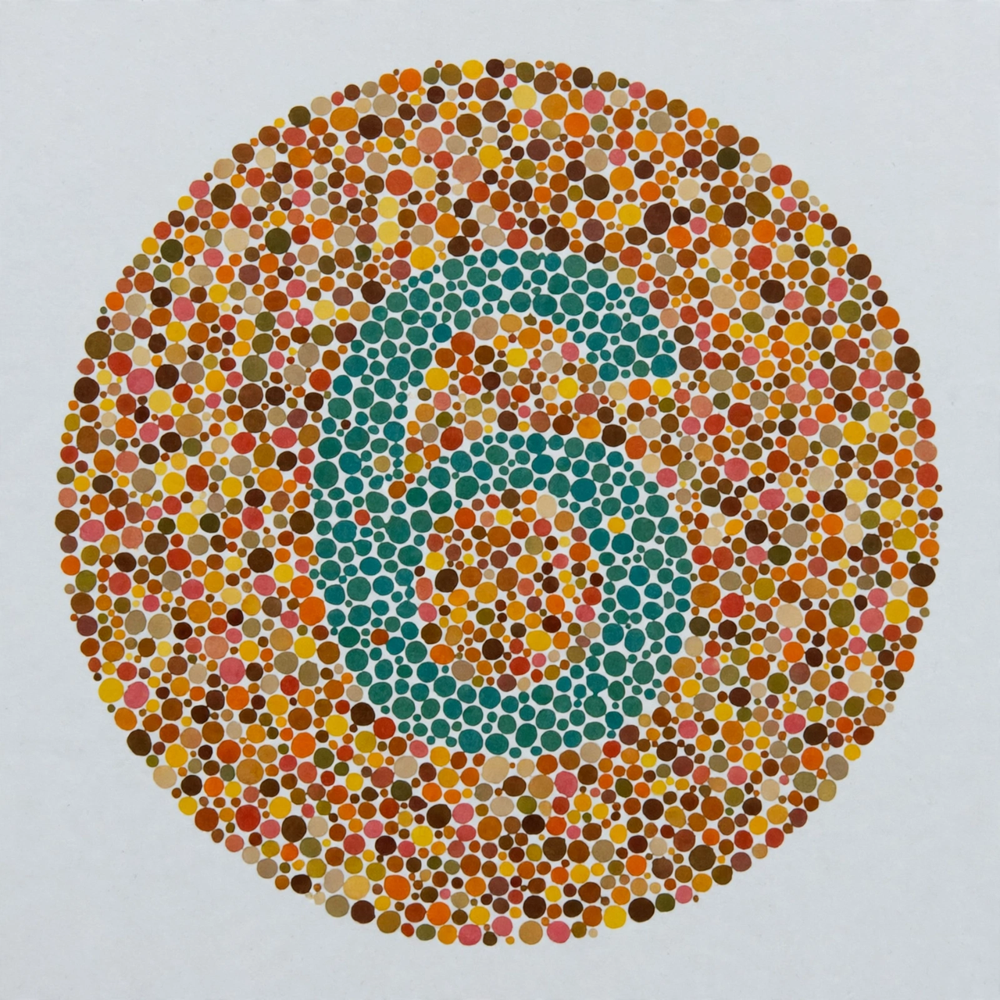

| Color blindness | |
|---|---|
| Other names | Color vision deficiency (CVD) |
| Specialty | Ophthalmology |
| Causes | Usually genetic (X-linked); also eye disease, ageing, drugs |
| Prevalence | ~8% of men, ~0.5% of women (Northern European ancestry) |
| Diagnosis | Ishihara test |

Color blindness (color vision deficiency, CVD) is the decreased ability to see color or differences in color. It most commonly arises from an inherited fault in the development of one or more of the three sets of color-sensing cone cells in the retina. Males are much more likely to be color blind than females, because the genes for the most common forms are on the X chromosome.
The most common forms are red-green deficiencies: protan defects affect the red (L) cones and deutan defects the green (M) cones. In anomalous trichromacy one cone type is altered in sensitivity (protanomaly, deuteranomaly — the latter affecting about 5% of men); in dichromacy one cone type is absent entirely (protanopia, deuteranopia, each about 1% of men). Blue-yellow deficiencies (tritan defects) are much rarer and affect the sexes equally. Total color blindness (achromatopsia), in which only rod cells function, is extremely rare and usually accompanied by poor acuity and light sensitivity.
Red-green CVD is inherited in an X-linked recessive pattern: a man needs only one affected X chromosome, while a woman generally needs two. Acquired color vision loss can result from diseases of the retina or optic nerve, cataracts, ageing, or certain medications and toxins.
Screening typically uses the Ishihara test, a set of plates with numerals formed by dots of differing hues. There is no cure for inherited CVD; management is adaptive. The chemist John Dalton, himself deuteranopic, published the first scientific paper on the condition in 1798, hence the older term "Daltonism". Color blindness can restrict some occupations — pilots, electricians, certain military roles — though requirements vary by country.
This article was recreated from memory as part of a web-reconstruction exercise.